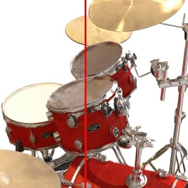

|
Florian Hahlbohm I'm a PhD student under the supervision of Marcus Magnor at the Computer Graphics Lab of the TU Braunschweig. |

|
ResearchI like NeRFs and what came after. Representative papers are highlighted |
|

|
PlenopticPoints: Rasterizing Neural Feature Points for High-Quality Novel View Synthesis
Florian Hahlbohm, Moritz Kappel, Jan-Philipp Tauscher, Martin Eisemann, Marcus Magnor VMV, 2023 project page / paper Point-based representation for single-object scenes capturing reflections and fine detail with improved quality. |
|
Thanks to Linus Franke for showing me this awesome template created by Jon Barron. |